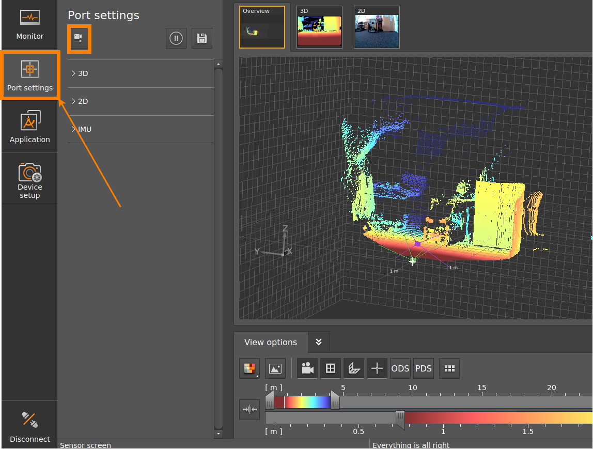
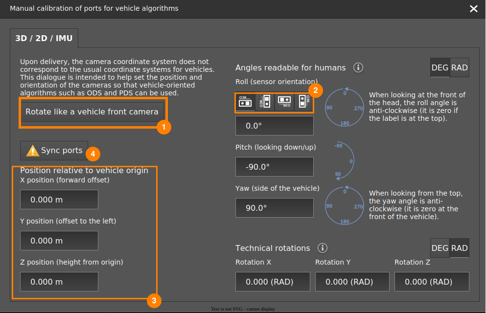
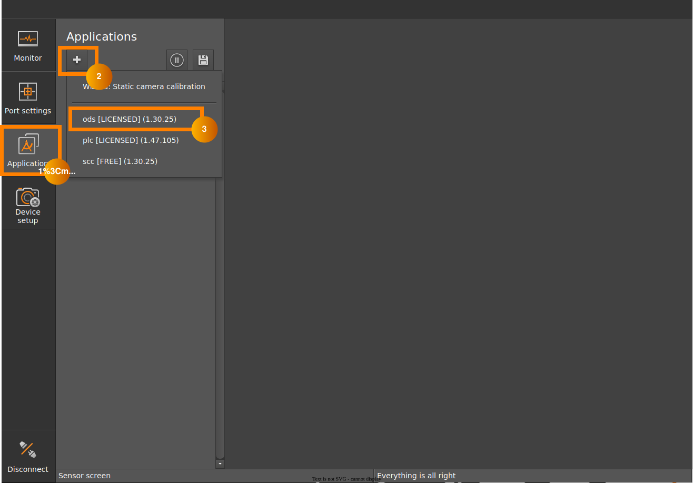
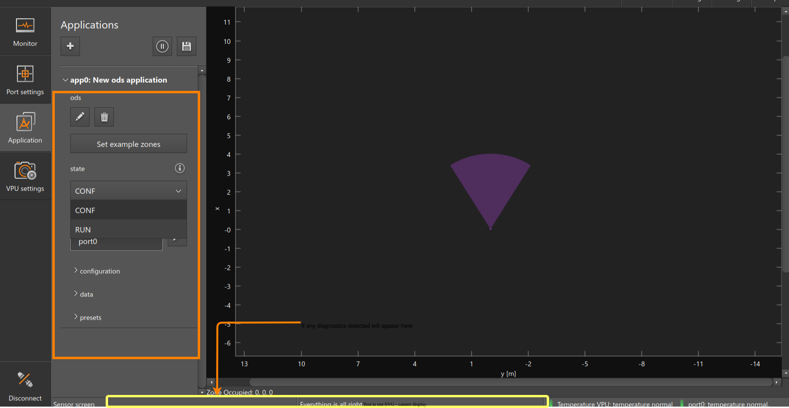
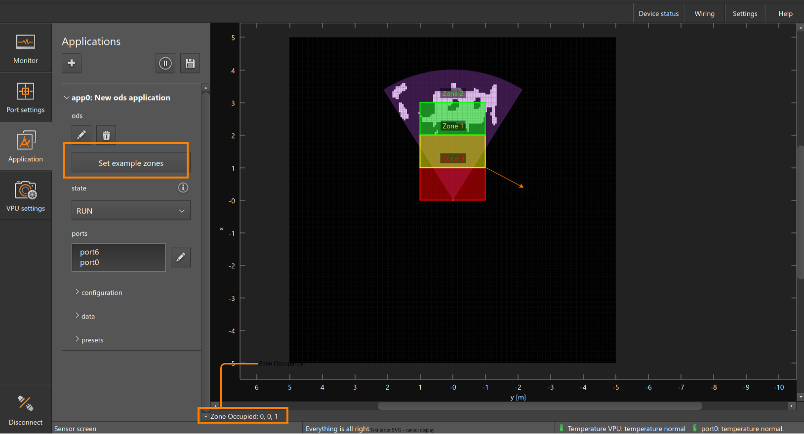

Getting started with ODS
Check out this video to get started with ODS:
Alternatively, you can read through the steps below.
What you need
An O3C device, powered and connected to your laptop via Ethernet.
The ifm Vision Assistant installed on your laptop — download the latest version from ifm.com.
For hardware setup and wiring details, see the unboxing guide.
Step 0: Connect and verify
Open the ifm Vision Assistant and confirm that it can connect to the O3C and receive data before proceeding.
Step 1: Extrinsic calibration
Use the calibration wizard in the ifm Vision Assistant to calibrate the camera.




By default, the calibration wizard uses the default calibration for the O3C. Because
PORT0(3D port),PORT1(2D port), andPORT6(IMU port) are calibrated to the camera reference system, you can use theSync portsbutton to synchronize the extrinsic calibration across all ports.To manually calibrate the camera, click on “Rotate like vehicle front camera”.
Choose the camera orientation, then adjust the roll/pitch and yaw as required. Do not configure the technical rotations; the system calculates them automatically.
Adjust the translation values relative to the vehicle origin reference system.
Select
Sync portsto synchronize the extrinsic calibration across all ports.
Step 2: Create an ODS application
In the “Application” tab, create an ODS application instance.


An application instance is created with default settings. By default, PORT0 is added to the list of ports for the ODS app to use.


Note
When you first instantiate the application, diagnostic messages may appear at the bottom of the screen. The ODS application checks the vehicle’s motion, and these checks may take some time to pass while the application is running. The messages typically disappear after ODS initializes properly.
Step 3: Start ODS
To start ODS, you can simply set the state parameter to "RUN":
Once the application is running, objects identified as obstacles will appear in the occupancy grid.
You can also activate the default zones by clicking the “Set Example Zones” button:

Next steps
At this point ODS is running with default settings. The next step is to configure it for your specific vehicle and environment:
Configuration — set up detection zones, grid parameters, ego-motion source, overhanging loads, and interference mitigation.
Mounting — verify that your camera placement meets the clearance areas and heat dissipation requirements. ****- Extrinsic calibration — improve the camera-to-vehicle calibration for production-quality detection.